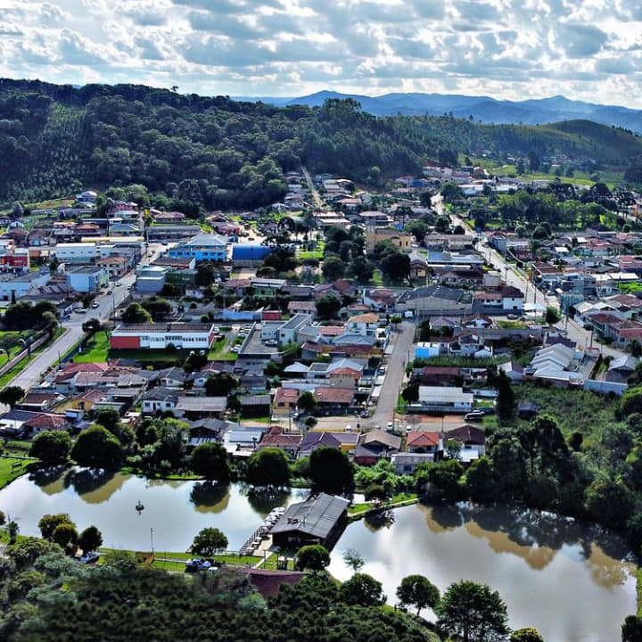

Sobre
Meu nome é Helison Scremin Rosa, nasci em 17 de novembro de 1997 em Campina Grande do Sul, Região metropolitana de Curitiba/PR mas vivi toda a minha vida até os dias de hoje em Bocaiúva do Sul, Região metropolitana de Curitiba/PR.
Filho de Hamilton da Silva Rosa (Lavrador) e Adair Scremin Rosa (Dona de casa), que moram a 8km da cidade, no bairro Ribeirãozinho, área rural de Bocaiúva.
Morei com meus pais até os 18 anos de idade, quando por fim consegui meu primeiro emprego em um supermercado da cidade.
Vindo de familia humilde, sempre me dediquei muito em tudo o que fiz até conseguir mudar para um emprego melhor e assim consegui me matricular em um curso de graduação para aprimorar meus conhecimentos em uma área que sempre tive muito interesse
Hoje moro sozinho, ainda em Bocaiúva do Sul e trabalho como Técnico em Esquadrias de Alumínio em uma das maiores empresas de aluminio de Curitiba.
Hobbies
Sou uma pessoa bem tranquila e que prefere ficar em casa a sair para uma festa, então algumas das coisas que gosto de fazer quando tenho tempo livre são:
Dentre esses Hobbies os meus preferidos são os que envolvem atividade fisica, na academia principalmente é onde deixo de lado todo o estresse do dia a dia.